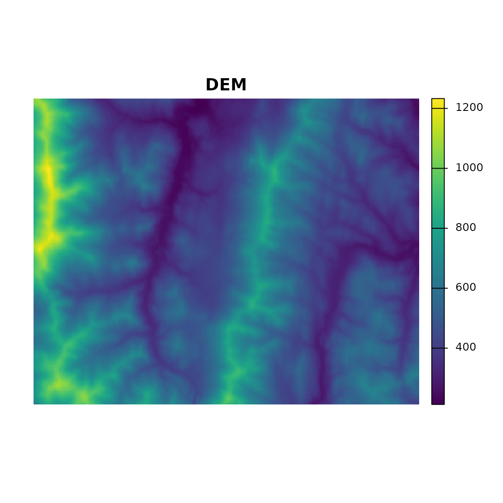
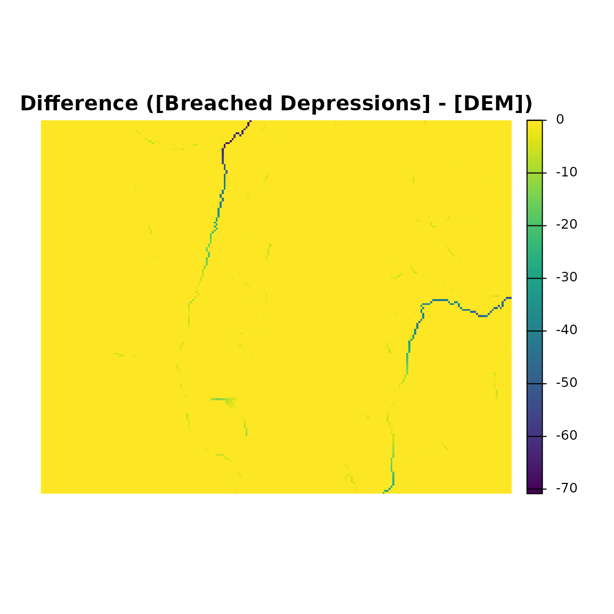
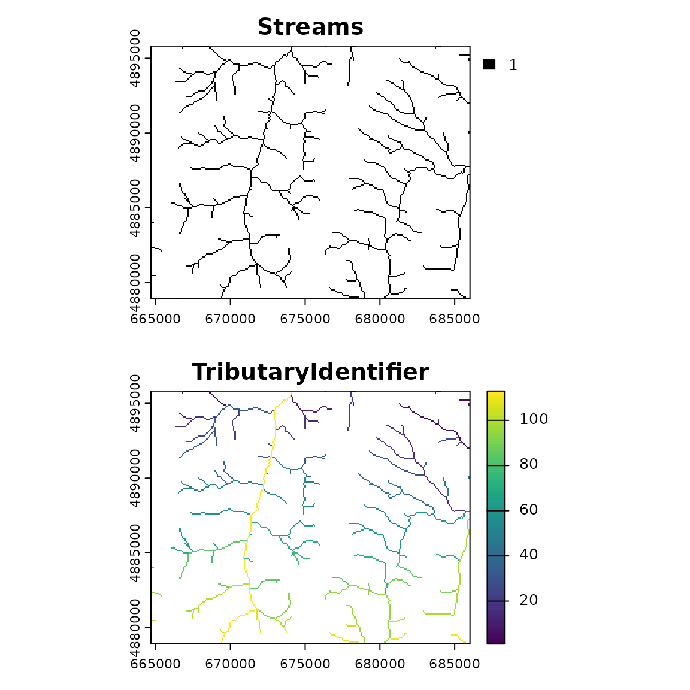

Introduction
whitebox is an R frontend for the ‘WhiteboxTools’ library, which is an advanced geospatial data analysis platform developed by Prof. John Lindsay at the University of Guelph’s Geomorphometry and Hydrogeomatics Research Group.
‘WhiteboxTools’ can be used to perform common geographical information systems (GIS) analysis operations, such as cost-distance analysis, distance buffering, and raster reclassification. Remote sensing and image processing tasks include image enhancement (e.g. panchromatic sharpening, contrast adjustments), image mosaicing, numerous filtering operations, simple classification (k-means), and common image transformations. ‘WhiteboxTools’ also contains advanced tooling for spatial hydrological analysis (e.g. flow-accumulation, watershed delineation, stream network analysis, sink removal), terrain analysis (e.g. common terrain indices such as slope, curvatures, wetness index, hillshading; hypsometric analysis; multi-scale topographic position analysis), and LiDAR data processing.
WhiteboxTools is not a cartographic or spatial data visualization package; instead it is meant to serve as an analytical backend for other data visualization software, mainly GIS.
This vignette shows how to use the whitebox R package to
run WhiteboxTools.
Suggested citation: Lindsay, J. B. (2016). Whitebox GAT: A case study in geomorphometric analysis. Computers & Geosciences, 95, 75-84. doi: http://dx.doi.org/10.1016/j.cageo.2016.07.003
Setup
Load the whitebox library.
How whitebox works
whitebox generates system() calls to a local
WhiteboxTools binary: whitebox_tools or
whitebox_tools.exe
You can find the binary path that the package is going to use with
wbt_exe_path()
wbt_exe_path(shell_quote = FALSE)
#> [1] "/home/runner/.local/share/R/whitebox/WBT/whitebox_tools"This command always returns a “default” path, whether or not you have WhiteboxTools installed.
Interfacing with R spatial packages
WhiteboxTools input and output are specified as file paths to rasters in GeoTIFF format, shapefiles, HTML output, LiDAR-related files, and more.
In this vignette we will use the terra package for
visualization. Just as easily we could have used raster,
stars or other options available in the R ecosystem for
handling the GeoTIFF output.
The main way to view your output is to save “output” file paths as a variable so that you can use them after processing to load the result into an R spatial object.
Working with Raster Data
A demonstration employing the {terra} package follows:
library(terra)
#> terra 1.7.21
library(whitebox)
# DEMO: calculate slope with WhiteboxTools and raster
# Typically the input/output paths are stored as variables
# sample DEM input GeoTIFF
input <- sample_dem_data()
# output file (to be created)
output <- file.path(tempdir(), "slope.tif")Run a tool such as wbt_slope() or
"Slope".
WhiteboxTools reads from input and writes to
output.
wbt_slope(input, output, units = 'radians')
if (file.exists(output)) {
# create a SpatRaster from file output path
outputras <- terra::rast(output)
}In this case, we can achieve a similar slope map result using
terra::terrain(), so we will create and plot a SpatRaster
from output and compare the two.
if (file.exists(input) && file.exists(output) && !is.null(outputras)) {
# par(mfrow = c(2, 1), mar = c(1, 1, 1, 1))
# inspect the output graphically
plot(
outputras,
main = "whitebox::wbt_slope() [radians]",
axes = FALSE
)
# calculate equivalent using raster::terrain() on input
plot(
terra::terrain(terra::rast(input)),
main = "terra::terrain() [radians]",
axes = FALSE
)
}
The SpatRaster, RasterLayer and related
classes in the terra and raster packages are perfect for maintaining the
linkage between file output and an R object with the data in or out of
memory.
Use terra::sources() to get the “source” file name(s).
If you are using a raster RasterLayer objects the
equivalent method is raster::filename().
# the SpatRaster retains a reference to the input file name
terra::sources(outputras)
#> [1] "/tmp/RtmpTWKUta/slope.tif"Installing WhiteboxTools
In whitebox wbt_init() is the standard way
to set the “exe_path” for a session.
If you do not have WhiteboxTools installed in the default location,
do not have whitebox_tools on your PATH, and have not set
up your package options, the package will not be able to find your
WhiteboxTools installation on load.
Usually you can use whitebox::install_whitebox() to
download the latest binaries that correspond to the available version of
the R package. However, this is not required. You may download/compile
WhiteboxTools yourself and install anywhere for use with the
whitebox R package.
For general information consult the WhiteboxTools User Manual: https://www.whiteboxgeo.com/manual/wbt_book/install.html
For more details on building from source see: https://github.com/jblindsay/whitebox-tools
Package Settings with wbt_init()
wbt_init() is used to set and check the path of the
binary executable that commands are passed to.
The executable path and other options are stored as package options,
and can be overridden by system environment variables. A default value
wbt_exe_path(shell_quote = FALSE) is passed when the
exe_path argument is unspecified.
# inspect where wbt_init() will be checking
wbt_exe_path(shell_quote = FALSE)
#> [1] "/home/runner/.local/share/R/whitebox/WBT/whitebox_tools"
# TRUE when file is found at one of the user specified paths or package default
# FALSE when whitebox_tools does not exist at path
wbt_init()This section will cover optional arguments to wbt_init()
(exe_path, wd and verbose) and
their corresponding options and helper functions.
exe_path argument
The exe_path argument to wbt_init() sets
the whitebox.exe_path package option. exe_path
is the path to a WhiteboxTools executable file. The default value is the
package installation directory, subdirectory "WBT",
followed by whitebox_tools.exe or
whitebox_tools depending on your operating system.
# set path manually to whitebox_tools executable, for instance:
wbt_init(exe_path = '/home/andrew/workspace/whitebox-tools/target/release/whitebox_tools')The package will automatically find an existing installation when
whitebox_tools is in a directory on your PATH.
Package options other than exe_path (as detailed in
?whitebox::whitebox and ?wbt_init) can be set
with wbt_init(exe_path, ...), where ... is
additional named arguments corresponding to the * suffix in
whitebox.* package options names. Use
wbt_options() or specific methods like
wbt_verbose(), wbt_wd() to get all values or
set specific values.
wd argument
The wd argument can be used to set the WhiteboxTools
working directory.
A working directory specifies a base folder path where WhiteboxTools
can find inputs and create outputs. Setting the whitebox.wd
package option (via the wd argument to
wbt_init() or wbt_wd()) aids the process of
setting file paths. If a value is set for the option the
--wd directory flag is added for tools that support it.
Before you set the working directory in a session the default output
will be in your current R working directory unless directory is
specified in your input/output arguments. You can change working
directory at any time by setting the wd argument to
wbt_wd() and running a tool.
NOTE: once you have set a working directory in a session, the directory needs to be set somewhere new to “replace” the old value; just dropping the flag will not automatically change the working directory back to your R working directory* and your output will show up in whatever folder you set initially.
A helper method for setting the whitebox.wd option is
wbt_wd().
To “unset” the option in the R package you can use
wbt_wd("") which is equivalent to
wbt_wd(getwd()). The next tool call will change the
WhiteboxTools working directory setting to the new path. After this
point the flag need not be specified [until you wish to change
again].
wbt_wd("") # "" equivalent to getwd()
verbose argument
The verbose argument is used to set the package option
related to tool “verbosity”: whitebox.verbose. When
whitebox.verbose is FALSE no output will be
cat() to the console by running tools.
A helper method for getting and setting the
whitebox.verbose option is wbt_verbose().
wbt_verbose() is used throughout the package to check what
level of verbosity should be used.
By default, the result of wbt_verbose() is the result of
interactive() so tools will print extra console output when
you are there to see it. This is used in a variety of wbt_*
methods to allow the package option to control output for many functions
in a consistent manner, hide output in your automated tests, markdown
documents, vignettes etc.
In this vignette we use wbt_verbose(TRUE) so the package
option whitebox.verbose is set to TRUE
# force output when run non-interactively (knitr)
wbt_verbose(TRUE)This is mainly to print out the tool name and elapsed time whenever we run a tool:
#> wbt_breach_depressions - Elapsed Time (excluding I/O): 0.12sThis package-level verbose option can also control the
verbose_mode values passed to wbt_* tool
functions. Turning on “full” output requires a third option to be set
for this argument: "all". Use
wbt_verbose("all"). wbt_verbose() will still
return TRUE when the whitebox.verbose option
is "all".
Long-term Package Option Settings
The package will detect when you have added the WhiteboxTools
directory to your PATH environment variable. For long-term
package option settings you can put whitebox_tools on
$PATH or set R_WHITEBOX_EXE_PATH in your user
.Rprofile or .Renviron.
On Windows you can add the path to whitebox_tools.exe as
a new entry R_WHITEBOX_EXE_PATH in User or System
Environment variable.
On Linux/Mac you can set R_WHITEBOX_EXE_PATH directly
with
export R_WHITEBOX_EXE_PATH="/path/to/whitebox_tools".
- Note that if you set your
$PATHin you regular shell profile (.profile/.bashrc/.zshrc) then it will not be sourced by RStudio for your R session by default.
This requires that you have the Unix tool which or one
of its analogues.
You can also set R_WHITEBOX_EXE_PATH manually in R:
Sys.setenv(R_WHITEBOX_EXE_PATH = Sys.which("whitebox_tools"))- Replace the
Sys.which()call with a custom path string as needed such as"C:/path/to/whitebox_tools.exe".
All of the other package options can similarly be set as environment
variables. They are prefixed with R_WHITEBOX_*. See
?whitebox for details.
Running tools
Specify input and output paths, and any other options, as specified in package reference:
For instance, “BreachDepressions” is used below to process a Digital Elevation Model (DEM) before we identify flow pathways. This tool uses uses Lindsay’s (2016) algorithm, which is preferred over depression filling in most cases.
# sample DEM file path in package extdata folder
input <- sample_dem_data()
# output file name
output <- file.path(tempdir(), "output.tif")
# run breach_depressions tool
wbt_breach_depressions(dem = input, output = output)
#> breach_depressions - Elapsed Time (excluding I/O): 0.9sFor more info see: ?wbt_breach_depressions
These wbt_*_tool_name_*() functions are wrappers around
the wbt_run_tool() function that does the
system() call given a function-specific argument
string.
# sample DEM file path in package extdata folder
input <- sample_dem_data()
# output file name
output <- file.path(tempdir(), "output.tif")
# run breach_depressions tool
wbt_run_tool(tool_name = "BreachDepressions", args = paste0("--dem=", input, " --output=", output))
#> BreachDepressions - Elapsed Time (excluding I/O): 0.9sThe above method of creating
wbt_breach_depressions(dem = ..., output = ...) to handle
wbt_run_tool("BreachDepressions", args = ...) makes it easy
to generate static methods that have parity with the latest
WhiteboxTools interface.
Example: Compare input v.s. output with terra
We use the {terra} package to read the GeoTIFF file output by WhiteboxTools.
Setup
library(terra)
# sample DEM file path in package extdata folder
input <- sample_dem_data()
# output file name
output <- file.path(tempdir(), "output.tif")Run wbt_breach_depressions() (BreachDepressions
tool)
# run breach_depressions tool
wbt_breach_depressions(dem = input, output = output)
#> breach_depressions - Elapsed Time (excluding I/O): 0.10sVisualize results with terra
# create raster object from input file
input <- rast(input)
if (file.exists(output)) {
# create raster object from output file
output <- rast(output)
# par(mar = c(2, 1, 2, 1))
# inspect input v.s. output
plot(input, axes = FALSE, main = "DEM")
plot(output, axes = FALSE, main = "DEM (Breached Depressions)")
# inspect numeric difference (output - input)
plot(output - input, axes = FALSE, main = "Difference ([Breached Depressions] - [DEM])")
}
Example: Identifying Tributaries
Here we will take our processing of DEMs a bit further by performing several WhiteboxTools operations in sequence.
We are interested in identifying and ranking tributaries of watercourses (streams and rivers).
An R package that makes use of the whitebox R package is
hydroweight. Here
is a brief example on the beginning of the hydroweight
README showing how the breached DEM above can be used in a spatial
analysis of stream networks.
Setup
library(whitebox)
library(terra)
## Sample DEM from whitebox package
toy_file <- sample_dem_data()
toy_dem <- rast(x = toy_file)
## Generate wd as a temporary directory.
## Replace with your own path, or "." for current directory
wd <- tempdir()
## Write toy_dem to working directory
writeRaster(
x = toy_dem, filename = file.path(wd, "toy_dem.tif"),
overwrite = TRUE
)
wbt_breach_depressions() – Breach DEM Depressions
First we pre-process by breaching depressions in the DEM
## Breach depressions to ensure continuous flow
wbt_breach_depressions(
dem = file.path(wd, "toy_dem.tif"),
output = file.path(wd, "toy_dem_breached.tif")
)
#> breach_depressions - Elapsed Time (excluding I/O): 0.9s
wbt_d8_pointer() – Calculate Flow Direction
Then we generate the direction of flow on the DEM surface using the “D8” flow pointer method
## Generate d8 flow pointer (note: other flow directions are available)
wbt_d8_pointer(
dem = file.path(wd, "toy_dem_breached.tif"),
output = file.path(wd, "toy_dem_breached_d8.tif")
)
#> d8_pointer - Elapsed Time (excluding I/O): 0.4s
wbt_d8_flow_accumulation() – Flow Accumulation
Once we calculate the direction of flow by some method, we calculate cumulative flow
For example with wbt_d8_flow_accumulation():
## Generate d8 flow accumulation in units of cells (note: other flow directions are available)
wbt_d8_flow_accumulation(
input = file.path(wd, "toy_dem_breached.tif"),
output = file.path(wd, "toy_dem_breached_accum.tif"),
out_type = "cells"
)
#> d8_flow_accumulation - Elapsed Time (excluding I/O): 0.6sAdditional Flow Direction and Accumulation Tools
In addition to D8 flow pointers (flow direction), there are several other options for both direction and accumulation such as FD8, D-infinity, and D-infinity.
Keyword “Pointer” tools:
"D8Pointer","DInfPointer","FD8Pointer","Rho8Pointer"Keyword “FlowAccumulation” tools:
"D8FlowAccumulation","DInfFlowAccumulation","FD8FlowAccumulation","Rho8FlowAccumulation","MDInfFlowAccumulation"
Search for more tools involving "flow pointer" by key
word: wbt_list_tools(keyword = "flow pointer")
#> All 26 Tools containing keywords:
#> AverageFlowpathSlope: Measures the average slope gradient from each grid cell to all upslope divide cells.
#> AverageUpslopeFlowpathLength: Measures the average length of all upslope flowpaths draining each grid cell.
#> D8FlowAccumulation: Calculates a D8 flow accumulation raster from an input DEM or flow pointer.
#> D8Pointer: Calculates a D8 flow pointer raster from an input DEM.
#> DInfFlowAccumulation: Calculates a D-infinity flow accumulation raster from an input DEM.
#> DInfPointer: Calculates a D-infinity flow pointer (flow direction) raster from an input DEM.
#> DownslopeFlowpathLength: Calculates the downslope flowpath length from each cell to basin outlet.
#> ExtractStreams: Extracts stream grid cells from a flow accumulation raster.
#> FD8FlowAccumulation: Calculates an FD8 flow accumulation raster from an input DEM.
#> FD8Pointer: Calculates an FD8 flow pointer raster from an input DEM.
#> FindNoFlowCells: Finds grid cells with no downslope neighbours.
#> FindParallelFlow: Finds areas of parallel flow in D8 flow direction rasters.
#> FlowAccumulationFullWorkflow: Resolves all of the depressions in a DEM, outputting a breached DEM, an aspect-aligned non-divergent flow pointer, and a flow accumulation raster.
#> FlowLengthDiff: Calculates the local maximum absolute difference in downslope flowpath length, useful in mapping drainage divides and ridges.
#> LongProfileFromPoints: Plots the longitudinal profiles from flow-paths initiating from a set of vector points.
#> LongestFlowpath: Delineates the longest flowpaths for a group of subbasins or watersheds.
#> MDInfFlowAccumulation: Calculates an FD8 flow accumulation raster from an input DEM.
#> MaxUpslopeFlowpathLength: Measures the maximum length of all upslope flowpaths draining each grid cell.
#> NumInflowingNeighbours: Computes the number of inflowing neighbours to each cell in an input DEM based on the D8 algorithm.
#> Rho8Pointer: Calculates a stochastic Rho8 flow pointer raster from an input DEM.
#> SnapPourPoints: Moves outlet points used to specify points of interest in a watershedding operation to the cell with the highest flow accumulation in its neighbourhood.
#> TraceDownslopeFlowpaths: Traces downslope flowpaths from one or more target sites (i.e. seed points).
#> Rho8FlowAccumulation: Calculates Fairfield and Leymarie (1991) flow accumulation.
#> QinFlowAccumulation: Calculates Qin et al. (2007) flow accumulation.
#> MaxUpslopeValue: Calculates the maximum upslope value from an input values raster along flowpaths.
#> QuinnFlowAccumulation: Calculates Quinn et al. (1995) flow accumulation.This is just an example of the wealth of tool options made available by the WhiteboxTools platform.
wbt_extract_streams() – Extract Stream Network
With our flow accumulation raster in hand, we can extract a stream
network with wbt_extract_streams() based on a threshold
(e.g. 100) of accumulated flow. This threshold value you
choose will depend on analysis goals, the choice of flow accumulation
algorithm used, local topography, as well as resolution and extent of
DEM.
## Generate streams with a stream initiation threshold of 100 cells
wbt_extract_streams(
flow_accum = file.path(wd, "toy_dem_breached_accum.tif"),
output = file.path(wd, "toy_dem_streams.tif"),
threshold = 100
)
#> extract_streams - Elapsed Time (excluding I/O): 0.0s
wbt_tributary_identifier() – Identify Tributaries
Next, let’s identify tributaries. This function
wbt_tributary_identifier() is a little more complicated
because it takes takes two inputs:
Our raster D8 pointer file.
And our raster streams file.
wbt_tributary_identifier(
d8_pntr = file.path(wd, "toy_dem_breached_d8.tif"),
streams = file.path(wd, "toy_dem_streams.tif"),
output = file.path(wd, "toy_dem_tributaries.tif")
)
#> tributary_identifier - Elapsed Time (excluding I/O): 0.1sCompare results
Finally, we compare results of wbt_extract_streams()
with wbt_tributary_identifier()
if (file.exists(file.path(wd, "toy_dem_streams.tif"))) {
par(mfrow = c(2, 1), mar = c(3, 1, 2, 1))
plot(
rast(file.path(wd, "toy_dem_streams.tif")),
main = "Streams",
col = "black"
)
plot(
rast(file.path(wd, "toy_dem_tributaries.tif")),
main = "TributaryIdentifier"
)
}
Appendix: wbt_* utility functions
These methods provide access to WhiteboxTools executable parameters and metadata.
wbt_help()
wbt_help() prints the WhiteboxTools help: a listing of
available commands for executable
wbt_help()
#> WhiteboxTools Help
#>
#> The following commands are recognized:
#> --cd, --wd Changes the working directory; used in conjunction with --run flag.
#> --compress_rasters Sets the compress_raster option in the settings.json file; determines if newly created rasters are compressed. e.g. --compress_rasters=true
#> -h, --help Prints help information.
#> -l, --license Prints the whitebox-tools license. Tool names may also be used, --license="Slope"
#> --listtools Lists all available tools. Keywords may also be used, --listtools slope.
#> --max_procs Sets the maximum number of processors used. -1 = all available processors. e.g. --max_procs=2
#> -r, --run Runs a tool; used in conjunction with --wd flag; -r="LidarInfo".
#> --toolbox Prints the toolbox associated with a tool; --toolbox=Slope.
#> --toolhelp Prints the help associated with a tool; --toolhelp="LidarInfo".
#> --toolparameters Prints the parameters (in json form) for a specific tool; --toolparameters="LidarInfo".
#> -v Verbose mode. Without this flag, tool outputs will not be printed.
#> --viewcode Opens the source code of a tool in a web browser; --viewcode="LidarInfo".
#> --version Prints the version information.
#>
#> Example Usage:
#> >> ./whitebox_tools -r=lidar_info --cd="/path/to/data/" -i=input.las --vlr --geokeys
wbt_license()
wbt_license() prints the WhiteboxTools license
wbt_license()
#> WhiteboxTools License
#> Copyright 2017-2023 John Lindsay
#>
#> Permission is hereby granted, free of charge, to any person obtaining a copy of this software and
#> associated documentation files (the "Software"), to deal in the Software without restriction,
#> including without limitation the rights to use, copy, modify, merge, publish, distribute, sublicense,
#> and/or sell copies of the Software, and to permit persons to whom the Software is furnished to do so,
#> subject to the following conditions:
#>
#> The above copyright notice and this permission notice shall be included in all copies or substantial
#> portions of the Software.
#>
#> THE SOFTWARE IS PROVIDED "AS IS", WITHOUT WARRANTY OF ANY KIND, EXPRESS OR IMPLIED, INCLUDING BUT
#> NOT LIMITED TO THE WARRANTIES OF MERCHANTABILITY, FITNESS FOR A PARTICULAR PURPOSE AND
#> NONINFRINGEMENT. IN NO EVENT SHALL THE AUTHORS OR COPYRIGHT HOLDERS BE LIABLE FOR ANY CLAIM, DAMAGES
#> OR OTHER LIABILITY, WHETHER IN AN ACTION OF CONTRACT, TORT OR OTHERWISE, ARISING FROM, OUT OF OR IN
#> CONNECTION WITH THE SOFTWARE OR THE USE OR OTHER DEALINGS IN THE SOFTWARE.
wbt_version()
Prints the WhiteboxTools version
wbt_version()
#> WhiteboxTools v2.3.0 (c) Dr. John Lindsay 2017-2023
#>
#> WhiteboxTools is an advanced geospatial data analysis platform developed at
#> the University of Guelph's Geomorphometry and Hydrogeomatics Research
#> Group (GHRG). See www.whiteboxgeo.com for more details.
wbt_list_tools()
Use wbt_list_tools() to list all available tools in
WhiteboxTools. In version 2.3.0 there are over 478 tools! See all the
available toolboxes
and extensions.
The full list can be an overwhelming amount of output, so you pass
the keywords argument to search and filter.
For example we list tools with keyword ‘flowaccumulation’ in tool name or description.
wbt_list_tools(keywords = "flowaccumulation")
#> All 8 Tools containing keywords:
#> D8FlowAccumulation: Calculates a D8 flow accumulation raster from an input DEM or flow pointer.
#> DInfFlowAccumulation: Calculates a D-infinity flow accumulation raster from an input DEM.
#> FD8FlowAccumulation: Calculates an FD8 flow accumulation raster from an input DEM.
#> FlowAccumulationFullWorkflow: Resolves all of the depressions in a DEM, outputting a breached DEM, an aspect-aligned non-divergent flow pointer, and a flow accumulation raster.
#> MDInfFlowAccumulation: Calculates an FD8 flow accumulation raster from an input DEM.
#> Rho8FlowAccumulation: Calculates Fairfield and Leymarie (1991) flow accumulation.
#> QuinnFlowAccumulation: Calculates Quinn et al. (1995) flow accumulation.
#> QinFlowAccumulation: Calculates Qin et al. (2007) flow accumulation.
wbt_tool_help()
Once we find a tool that we are interested in using, we can investigate what sort of parameters it takes. The R methods generally take the same named parameters.
R functions have the naming scheme wbt_tool_name where
_ is used for spaces, whereas the tools themselves have no
spaces.
wbt_tool_help("tributaryidentifier") shows the command
line help for a tool by name.
wbt_tool_help("tributaryidentifier")
#> TributaryIdentifier
#> Description:
#> Assigns a unique identifier to each tributary in a stream network.
#> Toolbox: Stream Network Analysis
#> Parameters:
#>
#> Flag Description
#> ----------------- -----------
#> --d8_pntr Input raster D8 pointer file.
#> --streams Input raster streams file.
#> -o, --output Output raster file.
#> --esri_pntr D8 pointer uses the ESRI style scheme.
#> --zero_background Flag indicating whether a background value of zero should be used.
#>
#>
#> Example usage:
#> >>./whitebox_tools -r=TributaryIdentifier -v --wd="/path/to/data/" --d8_pntr=D8.tif --streams=streams.tif -o=output.tif
#> >>./whitebox_tools -r=TributaryIdentifier -v --wd="/path/to/data/" --d8_pntr=D8.tif --streams=streams.tif -o=output.tif --esri_pntr --zero_background?wbt_tributary_identifier shows the corresponding R
function help, which is derived from the command line help page and
other metadata.
wbt_toolbox()
Another way that tools are organized in WhiteboxTools is by “toolbox.”
wbt_toolbox() prints the toolbox for a specific tool (or
all tools if none specified)
wbt_toolbox(tool_name = "aspect")
#> Geomorphometric AnalysisPrint the full list by not specifying tool_name
wbt_toolbox()
#> AbsoluteValue: Math and Stats Tools
#> AdaptiveFilter: Image Processing Tools/Filters
#> Add: Math and Stats Tools
#> AddPointCoordinatesToTable: Data Tools
#> AggregateRaster: GIS Analysis
#> And: Math and Stats Tools
#> Anova: Math and Stats Tools
#> ArcCos: Math and Stats Tools
#> ArcSin: Math and Stats Tools
#> ArcTan: Math and Stats Tools
#> Arcosh: Math and Stats Tools
#> Arsinh: Math and Stats Tools
#> Artanh: Math and Stats Tools
#> AsciiToLas: LiDAR Tools
#> Aspect: Geomorphometric Analysis
#> Atan2: Math and Stats Tools
#> AttributeCorrelation: Math and Stats Tools
#> AttributeCorrelationNeighbourhoodAnalysis: Math and Stats Tools
#> AttributeHistogram: Math and Stats Tools
#> AttributeScattergram: Math and Stats Tools
#> AverageFlowpathSlope: Hydrological Analysis
#> AverageNormalVectorAngularDeviation: Geomorphometric Analysis
#> AverageOverlay: GIS Analysis/Overlay Tools
#> AverageUpslopeFlowpathLength: Hydrological Analysis
#> BalanceContrastEnhancement: Image Processing Tools/Image Enhancement
#> Basins: Hydrological Analysis
#> BilateralFilter: Image Processing Tools/Filters
#> BlockMaximumGridding: GIS Analysis
#> BlockMinimumGridding: GIS Analysis
#> BoundaryShapeComplexity: GIS Analysis/Patch Shape Tools
#> BreachDepressions: Hydrological Analysis
#> BreachDepressionsLeastCost: Hydrological Analysis
#> BreachSingleCellPits: Hydrological Analysis
#> BufferRaster: GIS Analysis/Distance Tools
#> BurnStreamsAtRoads: Hydrological Analysis
#> Ceil: Math and Stats Tools
#> Centroid: GIS Analysis
#> CentroidVector: GIS Analysis
#> ChangeVectorAnalysis: Image Processing Tools
#> CircularVarianceOfAspect: Geomorphometric Analysis
#> ClassifyBuildingsInLidar: LiDAR Tools
#> ClassifyOverlapPoints: LiDAR Tools
#> CleanVector: Data Tools
#> Clip: GIS Analysis/Overlay Tools
#> ClipLidarToPolygon: LiDAR Tools
#> ClipRasterToPolygon: GIS Analysis/Overlay Tools
#> Closing: Image Processing Tools
#> Clump: GIS Analysis
#> CompactnessRatio: GIS Analysis/Patch Shape Tools
#> ConditionalEvaluation: Math and Stats Tools
#> ConditionedLatinHypercube: Math and Stats Tools
#> ConservativeSmoothingFilter: Image Processing Tools/Filters
#> ConstructVectorTIN: GIS Analysis
#> ContoursFromPoints: Geomorphometric Analysis
#> ContoursFromRaster: Geomorphometric Analysis
#> ConvertNodataToZero: Data Tools
#> ConvertRasterFormat: Data Tools
#> CornerDetection: Image Processing Tools/Filters
#> CorrectVignetting: Image Processing Tools/Image Enhancement
#> Cos: Math and Stats Tools
#> Cosh: Math and Stats Tools
#> CostAllocation: GIS Analysis/Distance Tools
#> CostDistance: GIS Analysis/Distance Tools
#> CostPathway: GIS Analysis/Distance Tools
#> CountIf: GIS Analysis/Overlay Tools
#> CreateColourComposite: Image Processing Tools
#> CreateHexagonalVectorGrid: GIS Analysis
#> CreatePlane: GIS Analysis
#> CreateRectangularVectorGrid: GIS Analysis
#> CrispnessIndex: Math and Stats Tools
#> CrossTabulation: Math and Stats Tools
#> CsvPointsToVector: Data Tools
#> CumulativeDistribution: Math and Stats Tools
#> D8FlowAccumulation: Hydrological Analysis
#> D8MassFlux: Hydrological Analysis
#> D8Pointer: Hydrological Analysis
#> DInfFlowAccumulation: Hydrological Analysis
#> DInfMassFlux: Hydrological Analysis
#> DInfPointer: Hydrological Analysis
#> Decrement: Math and Stats Tools
#> DepthInSink: Hydrological Analysis
#> DevFromMeanElev: Geomorphometric Analysis
#> DiffFromMeanElev: Geomorphometric Analysis
#> DiffOfGaussianFilter: Image Processing Tools/Filters
#> Difference: GIS Analysis/Overlay Tools
#> DirectDecorrelationStretch: Image Processing Tools/Image Enhancement
#> DirectionalRelief: Geomorphometric Analysis
#> Dissolve: GIS Analysis
#> DistanceToOutlet: Stream Network Analysis
#> DiversityFilter: Image Processing Tools/Filters
#> Divide: Math and Stats Tools
#> DownslopeDistanceToStream: Hydrological Analysis
#> DownslopeFlowpathLength: Hydrological Analysis
#> DownslopeIndex: Geomorphometric Analysis
#> EdgeContamination: Hydrological Analysis
#> EdgeDensity: Geomorphometric Analysis
#> EdgePreservingMeanFilter: Image Processing Tools/Filters
#> EdgeProportion: GIS Analysis/Patch Shape Tools
#> ElevAbovePit: Geomorphometric Analysis
#> ElevPercentile: Geomorphometric Analysis
#> ElevRelativeToMinMax: Geomorphometric Analysis
#> ElevRelativeToWatershedMinMax: Geomorphometric Analysis
#> ElevationAboveStream: Hydrological Analysis
#> ElevationAboveStreamEuclidean: Hydrological Analysis
#> EliminateCoincidentPoints: GIS Analysis
#> ElongationRatio: GIS Analysis/Patch Shape Tools
#> EmbankmentMapping: Geomorphometric Analysis
#> EmbossFilter: Image Processing Tools/Filters
#> EqualTo: Math and Stats Tools
#> Erase: GIS Analysis/Overlay Tools
#> ErasePolygonFromLidar: LiDAR Tools
#> ErasePolygonFromRaster: GIS Analysis/Overlay Tools
#> EuclideanAllocation: GIS Analysis/Distance Tools
#> EuclideanDistance: GIS Analysis/Distance Tools
#> Exp: Math and Stats Tools
#> Exp2: Math and Stats Tools
#> ExportTableToCsv: Data Tools
#> ExposureTowardsWindFlux: Geomorphometric Analysis
#> ExtendVectorLines: GIS Analysis
#> ExtractNodes: GIS Analysis
#> ExtractRasterValuesAtPoints: GIS Analysis
#> ExtractStreams: Stream Network Analysis
#> ExtractValleys: Stream Network Analysis
#> FD8FlowAccumulation: Hydrological Analysis
#> FD8Pointer: Hydrological Analysis
#> FarthestChannelHead: Stream Network Analysis
#> FastAlmostGaussianFilter: Image Processing Tools/Filters
#> FeaturePreservingSmoothing: Geomorphometric Analysis
#> FetchAnalysis: Geomorphometric Analysis
#> FillBurn: Hydrological Analysis
#> FillDepressions: Hydrological Analysis
#> FillDepressionsPlanchonAndDarboux: Hydrological Analysis
#> FillDepressionsWangAndLiu: Hydrological Analysis
#> FillMissingData: Geomorphometric Analysis
#> FillSingleCellPits: Hydrological Analysis
#> FilterLidarClasses: LiDAR Tools
#> FilterLidarScanAngles: LiDAR Tools
#> FilterRasterFeaturesByArea: GIS Analysis
#> FindFlightlineEdgePoints: LiDAR Tools
#> FindLowestOrHighestPoints: GIS Analysis
#> FindMainStem: Stream Network Analysis
#> FindNoFlowCells: Hydrological Analysis
#> FindParallelFlow: Hydrological Analysis
#> FindPatchOrClassEdgeCells: GIS Analysis/Patch Shape Tools
#> FindRidges: Geomorphometric Analysis
#> FlattenLakes: Hydrological Analysis
#> FlightlineOverlap: LiDAR Tools
#> FlipImage: Image Processing Tools
#> FloodOrder: Hydrological Analysis
#> Floor: Math and Stats Tools
#> FlowAccumulationFullWorkflow: Hydrological Analysis
#> FlowLengthDiff: Hydrological Analysis
#> GammaCorrection: Image Processing Tools/Image Enhancement
#> GaussianContrastStretch: Image Processing Tools/Image Enhancement
#> GaussianCurvature: Geomorphometric Analysis
#> GaussianFilter: Image Processing Tools/Filters
#> GaussianScaleSpace: Geomorphometric Analysis
#> Geomorphons: Geomorphometric Analysis
#> GreaterThan: Math and Stats Tools
#> HackStreamOrder: Stream Network Analysis
#> HeatMap: GIS Analysis
#> HeightAboveGround: LiDAR Tools
#> HighPassBilateralFilter: Image Processing Tools/Filters
#> HighPassFilter: Image Processing Tools/Filters
#> HighPassMedianFilter: Image Processing Tools/Filters
#> HighestPosition: GIS Analysis/Overlay Tools
#> Hillshade: Geomorphometric Analysis
#> Hillslopes: Hydrological Analysis
#> HistogramEqualization: Image Processing Tools/Image Enhancement
#> HistogramMatching: Image Processing Tools/Image Enhancement
#> HistogramMatchingTwoImages: Image Processing Tools/Image Enhancement
#> HoleProportion: GIS Analysis/Patch Shape Tools
#> HorizonAngle: Geomorphometric Analysis
#> HortonStreamOrder: Stream Network Analysis
#> HypsometricAnalysis: Geomorphometric Analysis
#> HypsometricallyTintedHillshade: Geomorphometric Analysis
#> IdwInterpolation: GIS Analysis
#> IhsToRgb: Image Processing Tools
#> ImageAutocorrelation: Math and Stats Tools
#> ImageCorrelation: Math and Stats Tools
#> ImageCorrelationNeighbourhoodAnalysis: Math and Stats Tools
#> ImageRegression: Math and Stats Tools
#> ImageStackProfile: Image Processing Tools
#> ImpoundmentSizeIndex: Hydrological Analysis
#> InPlaceAdd: Math and Stats Tools
#> InPlaceDivide: Math and Stats Tools
#> InPlaceMultiply: Math and Stats Tools
#> InPlaceSubtract: Math and Stats Tools
#> Increment: Math and Stats Tools
#> IndividualTreeDetection: LiDAR Tools
#> InsertDams: Hydrological Analysis
#> InstallWbExtension: Whitebox Utilities
#> IntegerDivision: Math and Stats Tools
#> IntegralImage: Image Processing Tools
#> Intersect: GIS Analysis/Overlay Tools
#> IsNoData: Math and Stats Tools
#> Isobasins: Hydrological Analysis
#> JensonSnapPourPoints: Hydrological Analysis
#> JoinTables: Data Tools
#> KMeansClustering: Machine Learning
#> KNearestMeanFilter: Image Processing Tools/Filters
#> KappaIndex: Math and Stats Tools
#> KsTestForNormality: Math and Stats Tools
#> LaplacianFilter: Image Processing Tools/Filters
#> LaplacianOfGaussianFilter: Image Processing Tools/Filters
#> LasToAscii: LiDAR Tools
#> LasToMultipointShapefile: LiDAR Tools
#> LasToShapefile: LiDAR Tools
#> LasToZlidar: LiDAR Tools
#> LaunchWbRunner: Whitebox Utilities
#> LayerFootprint: GIS Analysis
#> LeeSigmaFilter: Image Processing Tools/Filters
#> LengthOfUpstreamChannels: Stream Network Analysis
#> LessThan: Math and Stats Tools
#> LidarBlockMaximum: LiDAR Tools
#> LidarBlockMinimum: LiDAR Tools
#> LidarClassifySubset: LiDAR Tools
#> LidarColourize: LiDAR Tools
#> LidarDigitalSurfaceModel: LiDAR Tools
#> LidarElevationSlice: LiDAR Tools
#> LidarGroundPointFilter: LiDAR Tools
#> LidarHexBinning: LiDAR Tools
#> LidarHillshade: LiDAR Tools
#> LidarHistogram: LiDAR Tools
#> LidarIdwInterpolation: LiDAR Tools
#> LidarInfo: LiDAR Tools
#> LidarJoin: LiDAR Tools
#> LidarKappaIndex: LiDAR Tools
#> LidarNearestNeighbourGridding: LiDAR Tools
#> LidarPointDensity: LiDAR Tools
#> LidarPointStats: LiDAR Tools
#> LidarRansacPlanes: LiDAR Tools
#> LidarRbfInterpolation: LiDAR Tools
#> LidarRemoveDuplicates: LiDAR Tools
#> LidarRemoveOutliers: LiDAR Tools
#> LidarRooftopAnalysis: LiDAR Tools
#> LidarSegmentation: LiDAR Tools
#> LidarSegmentationBasedFilter: LiDAR Tools
#> LidarShift: LiDAR Tools
#> LidarTINGridding: LiDAR Tools
#> LidarThin: LiDAR Tools
#> LidarThinHighDensity: LiDAR Tools
#> LidarTile: LiDAR Tools
#> LidarTileFootprint: LiDAR Tools
#> LidarTophatTransform: LiDAR Tools
#> LineDetectionFilter: Image Processing Tools/Filters
#> LineIntersections: GIS Analysis/Overlay Tools
#> LineThinning: Image Processing Tools
#> LinearityIndex: GIS Analysis/Patch Shape Tools
#> LinesToPolygons: Data Tools
#> ListUniqueValues: Math and Stats Tools
#> ListUniqueValuesRaster: Math and Stats Tools
#> Ln: Math and Stats Tools
#> LocalQuadraticRegression: Geomorphometric Analysis
#> Log10: Math and Stats Tools
#> Log2: Math and Stats Tools
#> LongProfile: Stream Network Analysis
#> LongProfileFromPoints: Stream Network Analysis
#> LongestFlowpath: Hydrological Analysis
#> LowestPosition: GIS Analysis/Overlay Tools
#> MDInfFlowAccumulation: Hydrological Analysis
#> MajorityFilter: Image Processing Tools/Filters
#> MapOffTerrainObjects: Geomorphometric Analysis
#> Max: Math and Stats Tools
#> MaxAbsoluteOverlay: GIS Analysis/Overlay Tools
#> MaxAnisotropyDev: Geomorphometric Analysis
#> MaxAnisotropyDevSignature: Geomorphometric Analysis
#> MaxBranchLength: Geomorphometric Analysis
#> MaxDifferenceFromMean: Geomorphometric Analysis
#> MaxDownslopeElevChange: Geomorphometric Analysis
#> MaxElevDevSignature: Geomorphometric Analysis
#> MaxElevationDeviation: Geomorphometric Analysis
#> MaxOverlay: GIS Analysis/Overlay Tools
#> MaxUpslopeElevChange: Geomorphometric Analysis
#> MaxUpslopeFlowpathLength: Hydrological Analysis
#> MaxUpslopeValue: Hydrological Analysis
#> MaximalCurvature: Geomorphometric Analysis
#> MaximumFilter: Image Processing Tools/Filters
#> MeanCurvature: Geomorphometric Analysis
#> MeanFilter: Image Processing Tools/Filters
#> MedianFilter: Image Processing Tools/Filters
#> Medoid: GIS Analysis
#> MergeLineSegments: GIS Analysis/Overlay Tools
#> MergeTableWithCsv: Data Tools
#> MergeVectors: Data Tools
#> Min: Math and Stats Tools
#> MinAbsoluteOverlay: GIS Analysis/Overlay Tools
#> MinDownslopeElevChange: Geomorphometric Analysis
#> MinMaxContrastStretch: Image Processing Tools/Image Enhancement
#> MinOverlay: GIS Analysis/Overlay Tools
#> MinimalCurvature: Geomorphometric Analysis
#> MinimumBoundingBox: GIS Analysis
#> MinimumBoundingCircle: GIS Analysis
#> MinimumBoundingEnvelope: GIS Analysis
#> MinimumConvexHull: GIS Analysis
#> MinimumFilter: Image Processing Tools/Filters
#> ModifiedKMeansClustering: Machine Learning
#> ModifyNoDataValue: Data Tools
#> Modulo: Math and Stats Tools
#> Mosaic: Image Processing Tools
#> MosaicWithFeathering: Image Processing Tools
#> MultiPartToSinglePart: Data Tools
#> MultidirectionalHillshade: Geomorphometric Analysis
#> Multiply: Math and Stats Tools
#> MultiplyOverlay: GIS Analysis/Overlay Tools
#> MultiscaleElevationPercentile: Geomorphometric Analysis
#> MultiscaleRoughness: Geomorphometric Analysis
#> MultiscaleRoughnessSignature: Geomorphometric Analysis
#> MultiscaleStdDevNormals: Geomorphometric Analysis
#> MultiscaleStdDevNormalsSignature: Geomorphometric Analysis
#> MultiscaleTopographicPositionImage: Geomorphometric Analysis
#> NarrownessIndex: GIS Analysis/Patch Shape Tools
#> NaturalNeighbourInterpolation: GIS Analysis
#> NearestNeighbourGridding: GIS Analysis
#> Negate: Math and Stats Tools
#> NewRasterFromBase: Data Tools
#> NormalVectors: LiDAR Tools
#> NormalizeLidar: LiDAR Tools
#> NormalizedDifferenceIndex: Image Processing Tools
#> Not: Math and Stats Tools
#> NotEqualTo: Math and Stats Tools
#> NumDownslopeNeighbours: Geomorphometric Analysis
#> NumInflowingNeighbours: Hydrological Analysis
#> NumUpslopeNeighbours: Geomorphometric Analysis
#> OlympicFilter: Image Processing Tools/Filters
#> Opening: Image Processing Tools
#> Or: Math and Stats Tools
#> PairedSampleTTest: Math and Stats Tools
#> PanchromaticSharpening: Image Processing Tools/Image Enhancement
#> PatchOrientation: GIS Analysis/Patch Shape Tools
#> PennockLandformClass: Geomorphometric Analysis
#> PercentElevRange: Geomorphometric Analysis
#> PercentEqualTo: GIS Analysis/Overlay Tools
#> PercentGreaterThan: GIS Analysis/Overlay Tools
#> PercentLessThan: GIS Analysis/Overlay Tools
#> PercentageContrastStretch: Image Processing Tools/Image Enhancement
#> PercentileFilter: Image Processing Tools/Filters
#> PerimeterAreaRatio: GIS Analysis/Patch Shape Tools
#> PickFromList: GIS Analysis/Overlay Tools
#> PlanCurvature: Geomorphometric Analysis
#> PolygonArea: GIS Analysis
#> PolygonLongAxis: GIS Analysis
#> PolygonPerimeter: GIS Analysis
#> PolygonShortAxis: GIS Analysis
#> Polygonize: GIS Analysis/Overlay Tools
#> PolygonsToLines: Data Tools
#> Power: Math and Stats Tools
#> PrewittFilter: Image Processing Tools/Filters
#> PrincipalComponentAnalysis: Math and Stats Tools
#> PrintGeoTiffTags: Data Tools
#> Profile: Geomorphometric Analysis
#> ProfileCurvature: Geomorphometric Analysis
#> QinFlowAccumulation: Hydrological Analysis
#> Quantiles: Math and Stats Tools
#> QuinnFlowAccumulation: Hydrological Analysis
#> RadialBasisFunctionInterpolation: GIS Analysis
#> RadiusOfGyration: GIS Analysis/Patch Shape Tools
#> RaiseWalls: Hydrological Analysis
#> RandomField: Math and Stats Tools
#> RandomSample: Math and Stats Tools
#> RangeFilter: Image Processing Tools/Filters
#> RasterArea: GIS Analysis
#> RasterCalculator: Math and Stats Tools
#> RasterCellAssignment: GIS Analysis
#> RasterHistogram: Math and Stats Tools
#> RasterPerimeter: GIS Analysis
#> RasterStreamsToVector: Stream Network Analysis
#> RasterSummaryStats: Math and Stats Tools
#> RasterToVectorLines: Data Tools
#> RasterToVectorPoints: Data Tools
#> RasterToVectorPolygons: Data Tools
#> RasterizeStreams: Stream Network Analysis
#> Reciprocal: Math and Stats Tools
#> Reclass: GIS Analysis
#> ReclassEqualInterval: GIS Analysis
#> ReclassFromFile: GIS Analysis
#> ReinitializeAttributeTable: Data Tools
#> RelatedCircumscribingCircle: GIS Analysis/Patch Shape Tools
#> RelativeAspect: Geomorphometric Analysis
#> RelativeTopographicPosition: Geomorphometric Analysis
#> RemoveOffTerrainObjects: Geomorphometric Analysis
#> RemovePolygonHoles: Data Tools
#> RemoveShortStreams: Stream Network Analysis
#> RemoveSpurs: Image Processing Tools
#> RepairStreamVectorTopology: Stream Network Analysis
#> Resample: Image Processing Tools
#> RescaleValueRange: Math and Stats Tools
#> RgbToIhs: Image Processing Tools
#> Rho8FlowAccumulation: Hydrological Analysis
#> Rho8Pointer: Hydrological Analysis
#> RobertsCrossFilter: Image Processing Tools/Filters
#> RootMeanSquareError: Math and Stats Tools
#> Round: Math and Stats Tools
#> RuggednessIndex: Geomorphometric Analysis
#> ScharrFilter: Image Processing Tools/Filters
#> SedimentTransportIndex: Geomorphometric Analysis
#> SelectTilesByPolygon: LiDAR Tools
#> SetNodataValue: Data Tools
#> ShapeComplexityIndex: GIS Analysis/Patch Shape Tools
#> ShapeComplexityIndexRaster: GIS Analysis/Patch Shape Tools
#> ShreveStreamMagnitude: Stream Network Analysis
#> SigmoidalContrastStretch: Image Processing Tools/Image Enhancement
#> Sin: Math and Stats Tools
#> SinglePartToMultiPart: Data Tools
#> Sinh: Math and Stats Tools
#> Sink: Hydrological Analysis
#> Slope: Geomorphometric Analysis
#> SlopeVsElevationPlot: Geomorphometric Analysis
#> SmoothVectors: GIS Analysis
#> SnapPourPoints: Hydrological Analysis
#> SobelFilter: Image Processing Tools/Filters
#> SphericalStdDevOfNormals: Geomorphometric Analysis
#> SplitColourComposite: Image Processing Tools
#> SplitVectorLines: GIS Analysis
#> SplitWithLines: GIS Analysis/Overlay Tools
#> Square: Math and Stats Tools
#> SquareRoot: Math and Stats Tools
#> StandardDeviationContrastStretch: Image Processing Tools/Image Enhancement
#> StandardDeviationFilter: Image Processing Tools/Filters
#> StandardDeviationOfSlope: Geomorphometric Analysis
#> StochasticDepressionAnalysis: Hydrological Analysis
#> StrahlerOrderBasins: Hydrological Analysis
#> StrahlerStreamOrder: Stream Network Analysis
#> StreamLinkClass: Stream Network Analysis
#> StreamLinkIdentifier: Stream Network Analysis
#> StreamLinkLength: Stream Network Analysis
#> StreamLinkSlope: Stream Network Analysis
#> StreamPowerIndex: Geomorphometric Analysis
#> StreamSlopeContinuous: Stream Network Analysis
#> Subbasins: Hydrological Analysis
#> Subtract: Math and Stats Tools
#> SumOverlay: GIS Analysis/Overlay Tools
#> SurfaceAreaRatio: Geomorphometric Analysis
#> SymmetricalDifference: GIS Analysis/Overlay Tools
#> TINGridding: GIS Analysis
#> Tan: Math and Stats Tools
#> TangentialCurvature: Geomorphometric Analysis
#> Tanh: Math and Stats Tools
#> ThickenRasterLine: Image Processing Tools
#> TimeInDaylight: Geomorphometric Analysis
#> ToDegrees: Math and Stats Tools
#> ToRadians: Math and Stats Tools
#> TophatTransform: Image Processing Tools
#> TopologicalStreamOrder: Stream Network Analysis
#> TotalCurvature: Geomorphometric Analysis
#> TotalFilter: Image Processing Tools/Filters
#> TraceDownslopeFlowpaths: Hydrological Analysis
#> TravellingSalesmanProblem: GIS Analysis
#> TrendSurface: Math and Stats Tools
#> TrendSurfaceVectorPoints: Math and Stats Tools
#> TributaryIdentifier: Stream Network Analysis
#> Truncate: Math and Stats Tools
#> TurningBandsSimulation: Math and Stats Tools
#> TwoSampleKsTest: Math and Stats Tools
#> Union: GIS Analysis/Overlay Tools
#> UnnestBasins: Hydrological Analysis
#> UnsharpMasking: Image Processing Tools/Filters
#> UpdateNodataCells: GIS Analysis/Overlay Tools
#> UpslopeDepressionStorage: Hydrological Analysis
#> UserDefinedWeightsFilter: Image Processing Tools/Filters
#> VectorHexBinning: GIS Analysis
#> VectorLinesToRaster: Data Tools
#> VectorPointsToRaster: Data Tools
#> VectorPolygonsToRaster: Data Tools
#> VectorStreamNetworkAnalysis: Stream Network Analysis
#> Viewshed: Geomorphometric Analysis
#> VisibilityIndex: Geomorphometric Analysis
#> VoronoiDiagram: GIS Analysis
#> Watershed: Hydrological Analysis
#> WeightedOverlay: GIS Analysis/Overlay Tools
#> WeightedSum: GIS Analysis/Overlay Tools
#> WetnessIndex: Geomorphometric Analysis
#> WilcoxonSignedRankTest: Math and Stats Tools
#> WriteFunctionMemoryInsertion: Image Processing Tools
#> Xor: Math and Stats Tools
#> ZScores: Math and Stats Tools
#> ZlidarToLas: LiDAR Tools
#> ZonalStatistics: Math and Stats Tools
wbt_tool_parameters()
wbt_tool_parameters() retrieves the tool parameter
descriptions for a specific tool as JSON formatted string.
wbt_tool_parameters("slope")
#> {"parameters": [{"name":"Input DEM File","flags":["-i","--dem"],"description":"Input raster DEM file.","parameter_type":{"ExistingFile":"Raster"},"default_value":null,"optional":false},{"name":"Output File","flags":["-o","--output"],"description":"Output raster file.","parameter_type":{"NewFile":"Raster"},"default_value":null,"optional":false},{"name":"Z Conversion Factor","flags":["--zfactor"],"description":"Optional multiplier for when the vertical and horizontal units are not the same.","parameter_type":"Float","default_value":null,"optional":true},{"name":"Units","flags":["--units"],"description":"Units of output raster; options include 'degrees', 'radians', 'percent'","parameter_type":{"OptionList":["degrees","radians","percent"]},"default_value":"degrees","optional":true}]}
wbt_view_code()
WhiteboxTools is written in Rust and is open source. You can view the source code for a specific tool on the source code repository.
wbt_view_code("breach_depressions")
#> https://github.com/jblindsay/whitebox-tools/blob/master/whitebox-tools-app/src/tools/hydro_analysis/breach_depressions.rsUse the argument viewer=TRUE to use
browseURL() to open a browser window to the corresponding
GitHub page.